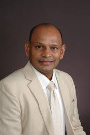

The National University of Singapore is home to some of the world's most influential researchers. These three professors have made exceptional contributions to their fields, with citation counts and research impact that place them among the global elite.
"Bridging the gap between molecular imaging discoveries and clinical applications."
Research Focus
- Molecular Imaging & Therapy
- Nanomedicine & Radiopharmaceuticals
- Translational Medicine
130,000+
Citations
190+
H-index
1000+
Publications

"Engineering nanomaterials for a sustainable future."
Research Focus
- Nanofibers & Nanotechnology
- Polymer Nanomaterials
- Circular Economy Materials
World's
Most Cited
FREng
Royal Academy
Director
Nanofibers Centre

"Advancing wireless communications through innovation and optimization."
Research Focus
- Wireless Communications
- UAV/Drone Communications
- Reconfigurable Intelligent Surfaces
110,000+
Citations
150+
H-index
600+
Publications